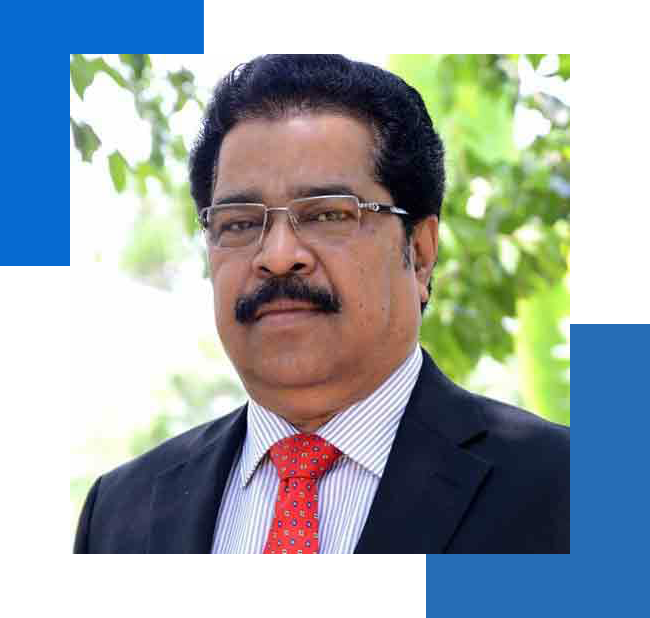
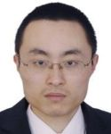
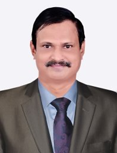
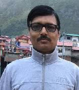
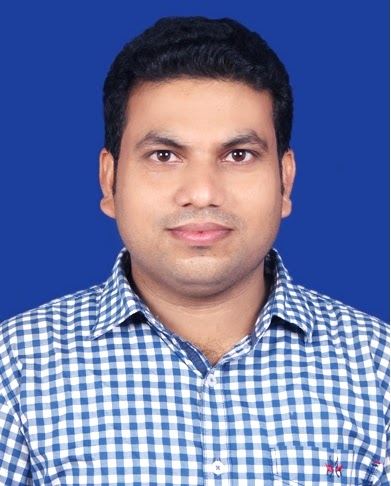

Organizing Committee
Chief Patron

Prof. Bibhuti Bhusan Biswal
Vice Chancellor, OUTR
General Chair

Prof. Yudong Zhang
School of Computing and Mathematical Sciences, University of Leicester, UK
Conference Convenors

Prof. Tapas Kumar Patra
SELS, OUTR

Prof. Jibitesh Mishra
SoCS, OUTR

Prof. Sushanta Kumar Sahu
SELS, OUTR
Local Conference Convenors
- Prof. Jagannath Sethi, SELS, OUTR
- Prof. Rashmita Routray, SELS, OUTR
- Prof. Naresh Chandra Naik, SELS, OUTR
- Prof. Ananya Dastidar, SELS, OUTR
Advisory Committee
International Advisory Committee
- Prof. Md Fazley Rafy, West Virginia University, USA
- Prof. Turgay Celik, Centre for Artificial Intelligence Research (CAIR), University of Agder, Norway
- Prof. Ruppa Thulasiram, Computer Science, University of Manitoba, Canada
- Prof. Sanjib Kumar Panda, National University of Singapore (NUS), Singapore
- Prof. Lalit Goel, Nanyang Technological University (NTU), Singapore
- Prof. Gautam Srivastava, Department of Mathematics & Computer Science, Brandon University (BU), Manitoba, Canada
- Prof. Chanchal Roy, Department of Computer Science, University of Saskatchewan, Canada
National Advisory Committee
- Prof. Sukumar Mishra, IIT (ISM) Dhanbad
- Prof. Bidyadhar Subudhi, NIT Warangal
- Prof. Sarat Kumar Patra, NIT Rourkela
- Prof. Laxmidhar Behera, IIT Mandi / IIT Kanpur
- Prof. Debi Prosad Dogra, IIT Bhubaneswar
- Prof. Srikanta Patnaik, SOA University, Bhubaneswar
- Prof. K. C. Pati, NIT Rourkela
- Prof. Renu Sharma, DTU Delhi
- Prof. Pradipta Kishore Dash, Former Professor, SOA (Ex-IIT Bhubaneswar)
- Prof. Banshidhar Majhi, KIIT Deemed to be University
Overall Organizing Committee
- Prof. Chandrasekhar N. Bhende (Chair), IIT Bhubaneswar
- Prof. P. Chandrasekhar, IIT Bhubaneswar
- Prof. Aruna Tripathy, SELS, OUTR
- Prof. Karmila Soren, SELS, OUTR
- Prof. Rashmita Routray, SELS, OUTR
- Prof. Abhyarthana Bisoyi, SELS, OUTR
- Prof. Sushanta Kumar Sahu, SELS, OUTR
- Prof. Naresh Chandra Naik, SELS, OUTR
- Prof. Jagannath Sethi, SELS, OUTR
- Prof. Madhab Chandra Tripathy, SELS, OUTR
- Prof. Debi Prasad Dash, SELS, OUTR
- Prof. Soumyashree Mangaraj, SELS, OUTR
- Prof. R.B. Keskar, VNIT Nagpur
- Prof. M. H. Kolekar, IIT Patna
- Prof. Ananya Dastidar, SELS, OUTR
- Prof. Kanhu Charan Bhuyan, SELS, OUTR
- Prof. Madhab Chandra Tripathy, SELS, OUTR
- Prof. Rashmi Rekha Sahoo, SELS, OUTR
- Prof. Sribatsa Behera, SELS, OUTR
- Prof. Tapas Kumar Patra, SELS, OUTR
- Prof. Jagannath Sethi, SELS, OUTR
- Prof. Karmila Soren, SELS, OUTR
- Prof. Naresh Chandra Naik, SELS, OUTR
- Prof. Abhyarthana Bisoyi, SELS, OUTR
- Prof. Rashmita Routray, SELS, OUTR
- Prof. Satyabhama Dash, SELS, OUTR
- Prof. Soumyashree Mangaraj, SELS, OUTR
- Prof. Suman Bala Behera, SELS, OUTR
- Prof. Sushanta Kumar Sahu, SELS, OUTR